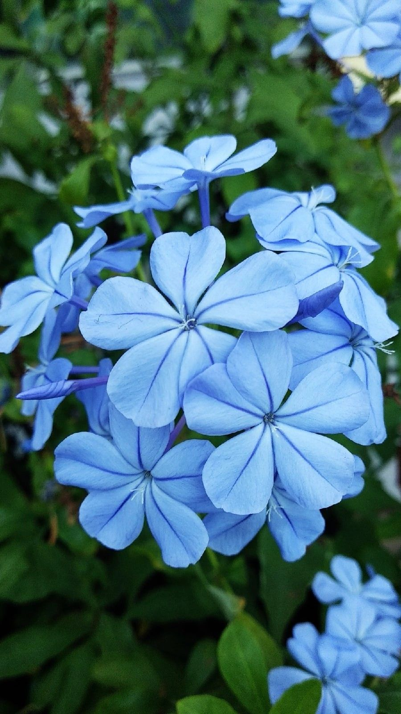

Dadas las vistosas flores azules de la planta conocida como jazmín azul, se usa extensamente para decoración, como planta ornamental. No obstante, hay que resguardarla de las temperaturas frías, ya que no las soporta muy bien. La jazmín azul es una planta enredadera que puede llegar a crecer hasta los 2 m de altura.
Tiene un aroma suave y delicado, ligeramente dulce.
Necesita buena iluminación para florecer abundantemente.
Se recomienda entre 4 y 6 horas de sol directo al día.
Riego moderado, manteniendo la tierra ligeramente húmeda.
En temporadas frías, reducir la frecuencia de riego.
Evitar exceso de humedad para prevenir hongos y daños en raíces.
Retirar flores marchitas y ramas secas para estimular nuevas flores.
La poda ayuda a mantener una forma más compacta y estética.
El Jazmín Azul atrae mariposas y polinizadores gracias a sus flores coloridas.
Es muy popular en jardines ornamentales por su larga floración y apariencia elegante.